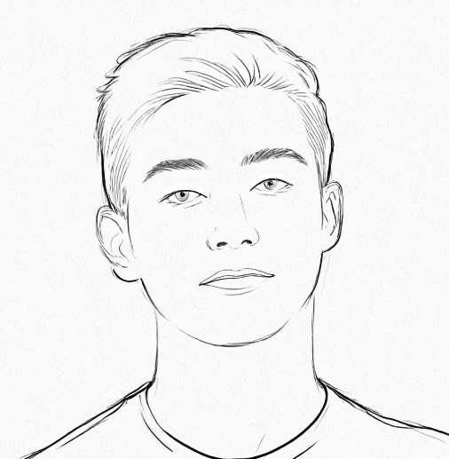

About

Hi there! I’m Baixiang, a CS PhD candidate at Emory University, advised by Dr. Kai Shu. My research focuses on building controllable LLMs and agents across various dimensions: factuality [ICLR'25, Book Chapter], safety [AAAI'26] and ethical alignment [AAAI'26], and personalization [arXiv'25], particularly through model editing 🛠️, a technique that enables precise and efficient modifications to LLMs while preserving their overall capabilities.
Previously, I have worked on authorship attribution [EMNLP'24, KDD'25], which aims to identify the author (or LLM) of a text based on their unique writing style.
In my free time, I enjoy the outdoors 🏔️🧗♂️ and staying active, especially running 🏃♂️ and weightlifting. I also find joy in cooking 🥘, baking 🍰, and playing 🎹 🎸.
Publications
-
Model Editing as a Double-Edged Sword: Steering Agent Ethical Behavior Toward Beneficence or Harm [AAAI 2026 Oral]
-
Can Editing LLMs Inject Harm? [AAAI 2026]
-
Rethinking Memory Mechanisms of Foundation Agents in the Second Half [TMLR'26]
-
Privacy-Aware Decoding: Mitigating Privacy Leakage of Large Language Models in Retrieval-Augmented Generation [KDD 2026]
-
Can Knowledge Editing Really Correct Hallucinations? [ICLR 2025]
-
SST: Multi-Scale Hybrid Mamba-Transformer Experts for Long-Short Range Time Series Forecasting [CIKM 2025]
-
Authorship Attribution in the Era of LLMs: Problems, Methodologies, and Challenges [ACM SIGKDD Exploration 2025]
-
Can Large Language Models Identify Authorship? [EMNLP 2024 Findings]
-
TAP: A Comprehensive Data Repository for Traffic Accident Prediction in Road Networks [ACM SIGSPATIAL 2023]
Preprints
-
Agents' Last Exam [arXiv'26]
-
Rethinking the Value of Multi-Agent Workflow: A Strong Single Agent Baseline [arXiv'26]
-
Who's Your Judge? On the Detectability of LLM-Generated Judgments [arXiv'25]
-
Towards Effective Model Editing for LLM Personalization [arXiv'25]